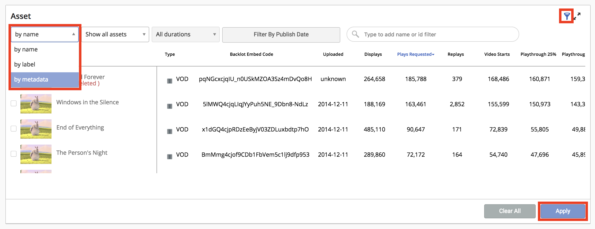
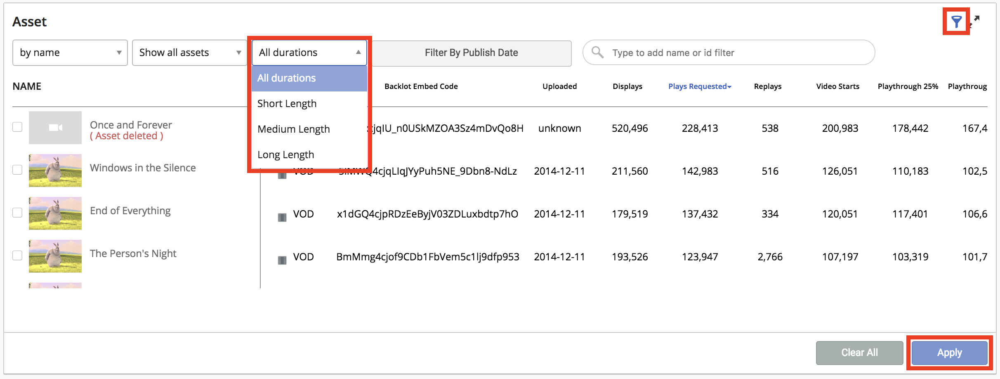
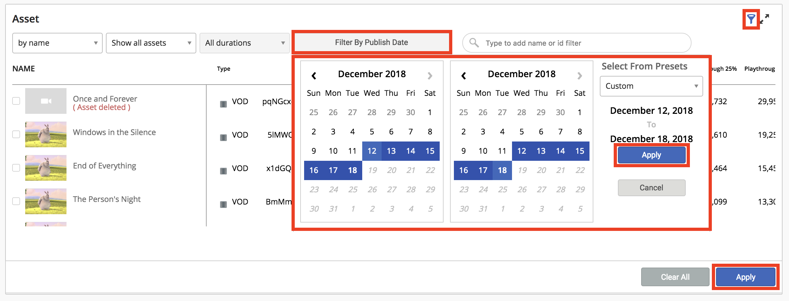

You can filter the asset dimension by custom metadata, a predefined duration or its publish date in the Asset section of the Business Intelligence page.
To filter assets based on custom metadata:
- Click on the filter icon for assets.
- Selet Metadata from the first drop down menu.
- Now enter the the value pair of the custom metadata you want to filter by.
- Click Apply.

Note: You can use commas to add multiple key value pairs of custom metadata.
To filter assets based on a predefined duration:
- Click on the filter icon for assets.
- Selet of the following durations from the Duration drop down menu:
- All durations
- Short length (0 - 5 mins)
- Medium length (5 - 20 mins)
- Long length (20+ mins)
- Click Apply.

Note: This duration filter will only work for assets with traffic after the release date.
To filter assets based on its publish date:
- CLick on the filter icon for assets.
- Click the Filter By Publish Date button.
- Select a date range or a custom preset and click Apply.
- Click Apply again.
